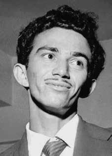

Virgílio
Gomes
da Silva
BIOGRAFIA
Virgílio Gomes da Silva foi o primeiro desaparecido da ditadura militar. Nasceu no Rio Grande do Norte e foi para São Paulo em busca de melhores condições de vida. Na capital paulista teve inúmeros trabalhos até entrar, em 1957, na empresa Nitroquímica como operário. Lá começou a atuar no movimento sindical, liderando greves. Filiou-se ao Partido Comunista Brasileiro (PCB) e, depois do golpe militar de 1964, passou uma temporada no Uruguai, retornando pouco tempo depois ao Brasil.
Dissidente do PCB, em 1967, uniu-se à Aliança Libertadora Nacional (ALN), quando viajou para Cuba para fazer treinamento de guerrilha. Conhecido como “Jonas”, chegou a ser o segundo na hierarquia da organização, abaixo apenas de Carlos Marighella. Em setembro de 1969, comandou a ação do sequestro do embaixador americano, Charles Burke Elbrick e logo depois foi preso pela Operação Bandeirante, (Oban), em São Paulo.
No mesmo dia foram detidos pela polícia sua mulher, Ida, e três de seus quatro filhos. A esposa ficou presa por nove meses, permanecendo incomunicável por todo o período. Segundo diversos presos políticos, Virgílio foi morto um dia após seu sequestro. As Forças Armadas jamais admitiram o crime oficialmente.
Em 2004, foram encontrados o laudo e a foto do corpo de Virgílio. Ele tinha escoriações e hematomas nos órgãos internos e afundamento do osso frontal. Em agosto de 2009, o jornal O Globo publicou matéria divulgando um dossiê do Exército que registra o assassinato de Virgílio pela ditadura. De acordo com um documento de 8 de outubro de 1969, o militante reagiu à prisão e morreu em virtude de “ferimentos recebidos”. “Virgílio Gomes da Silva, vulgo Jonas ou Borges, reagiu violentamente desde o momento de sua prisão, vindo a falecer (…) antes mesmo de prestar declarações”. A Comissão Estadual da Verdade de São Paulo realizou uma audiência sobre o caso de Virgílio, com a presença de sua viúva e seus filhos.
Virgílio Gomes da Silva was the first person to disappear during the military dictatorship. He was born in Rio Grande do Norte and went to São Paulo in search of better living conditions. In the capital of São Paulo he had numerous jobs until he joined the Nitroquímica company as a worker in 1957. There he began to work in the union movement, leading strikes. He joined the Brazilian Communist Party (PCB) and, after the 1964 military coup, spent time in Uruguay, returning shortly afterwards to Brazil.
A PCB dissident, in 1967, he joined the National Liberation Alliance (ALN), when he traveled to Cuba to undergo guerrilla training. Known as “Jonas”, he became second in the organization's hierarchy, below only Carlos Marighella. In September 1969, he led the kidnapping of the American ambassador, Charles Burke Elbrick and soon after was arrested by Operação Bandeirante, (Oban), in São Paulo.
On the same day, his wife, Ida, and three of his four children were detained by the police. The wife was imprisoned for nine months, remaining incommunicado throughout the period. According to several political prisoners, Virgílio was killed the day after his kidnapping. The Armed Forces never officially admitted the crime.
In 2004, the report and photo of Virgílio's body were found. He had abrasions and bruises on his internal organs and depression of his frontal bone. In August 2009, the newspaper O Globo published an article publicizing an Army dossier recording Virgílio's murder by the dictatorship. According to a document dated October 8, 1969, the militant reacted to the arrest and died due to “injuries received”. “Virgílio Gomes da Silva, aka Jonas or Borges, reacted violently from the moment of his arrest, dying (…) before even making a statement.” The São Paulo State Truth Commission held a hearing on Virgílio's case, with the presence of his widow and children.
Virgílio Gomes da Silva fue la primera persona desaparecida durante la dictadura militar. Nació en Rio Grande do Norte y se fue a São Paulo en busca de mejores condiciones de vida. En la capital paulista tuvo numerosos empleos hasta que ingresó como trabajador en la empresa Nitroquímica en 1957. Allí comenzó a trabajar en el movimiento sindical, liderando huelgas. Se afilió al Partido Comunista Brasileño (PCB) y, tras el golpe militar de 1964, pasó un tiempo en Uruguay, regresando poco después a Brasil.
Disidente del PCB, en 1967 se incorporó a la Alianza de Liberación Nacional (ALN), cuando viajó a Cuba para recibir entrenamiento guerrillero. Conocido como “Jonas”, pasó a ocupar el segundo lugar en la jerarquía de la organización, sólo por debajo de Carlos Marighella. En septiembre de 1969, lideró el secuestro del embajador estadounidense, Charles Burke Elbrick y poco después fue detenido por la Operação Bandeirante, (Oban), en São Paulo.
El mismo día, la policía detuvo a su esposa, Ida, y a tres de sus cuatro hijos. La esposa estuvo encarcelada durante nueve meses, permaneciendo incomunicada durante todo el período. Según varios presos políticos, Virgílio fue asesinado al día siguiente de su secuestro. Las Fuerzas Armadas nunca admitieron oficialmente el crimen.
En 2004 fueron encontrados el informe y la foto del cuerpo de Virgílio. Presentaba abrasiones y hematomas en los órganos internos y depresión del hueso frontal. En agosto de 2009, el periódico O Globo publicó un artículo dando a conocer un expediente del Ejército que registraba el asesinato de Virgílio por la dictadura. Según un documento fechado el 8 de octubre de 1969, el militante reaccionó a la detención y falleció a causa de las “heridas recibidas”. “Virgílio Gomes da Silva, alias Jonas o Borges, reaccionó violentamente desde el momento de su detención, muriendo (…) antes incluso de hacer una declaración”. La Comisión de la Verdad del Estado de São Paulo celebró una audiencia sobre el caso de Virgílio, con la presencia de su viuda e hijos.
CIRCUNSTÂNCIAS DA MORTE
Virgílio Gomes da Silva morreu no dia 29 de setembro de 1969, aos 36 anos, após ser preso em uma emboscada na avenida Duque de Caxias, em São Paulo, por agentes da Operação Bandeirante (Oban). Encapuzado, foi encaminhado diretamente à sala de tortura e morto 12 horas após a prisão. Naquela época, depois do envolvimento no sequestro do embaixador norte-americano, Virgílio era um dos guerrilheiros mais procurados pelos órgãos de repressão. No mesmo dia, sua mulher Ilda e três de seus filhos (Wladimir, com 8 anos, Virgílio, com 7, e Maria Isabel, um bebê de 4 meses), que viviam na clandestinidade, também foram detidos em São Sebastião, litoral de São Paulo. Ilda permaneceu presa durante meses, incomunicável, sendo torturada em várias ocasiões. Seus filhos foram encaminhados ao Juizado de Menores. Gregório, com dois anos na ocasião, não foi levado por não estar em casa no momento da chegada dos agentes. Vários ex-presos políticos que passaram pela Oban presenciaram as torturas sofridas por Virgílio e as denunciaram em auditorias militares, entre eles, seus ex-companheiros Paulo de Tarso Venceslau e Manoel Cyrillo de Oliveira Neto, além de Celso Antunes Horta e Diógenes de Arruda Câmara. Seu irmão Francisco Gomes da Silva, que tinha sido preso no dia anterior, afirmou ter visto sua chegada e escutado brutais cenas de tortura, comandadas pela equipe do capitão Albernaz, o mesmo que teria afirmado que Virgílio fugira da prisão momentos depois. De acordo com o depoimento do irmão Francisco, Virgílio foi algemado e agredido por cerca de quinze pessoas, que lhe davam pontapés e lhe cuspiam no rosto. Depois, ainda teria sido levado para outra sala, onde continuou a ser torturado até a morte. Com as informações prestadas nos depoimentos emitidos sobre o caso foi possível identificar uma série de agentes envolvidos diretamente em sua morte, comandada pelos então chefes do centro de tortura da Oban, os majores Inocêncio Fabrício de Matos Beltrão e Valdir Coelho. Segundo os relatos, ainda estavam envolvidos diretamente no caso, além do capitão Benone Arruda Albernaz, Dalmo Lúcio Muniz Cirillo, Maurício Lopes Lima, Homero César Machado, “Tomás”, da PM/SP, o delegado Otávio Gonçalves Moreira Jr., o sargento da PM Paulo Bordini e os agentes policiais Maurício de Freitas, vulgo Lungaretti, Paulo Rosa, vulgo Paulo Bexiga e “Américo”, agente do Departamento da Polícia Federal. Ainda foram identificados, a partir de carta escrita pelos presos políticos do Presídio do Barro Branco/SP, o delegado Raul Careca e o capitão da Polícia Militar Coutinho. Em novembro de 2010, o Ministério Público Federal moveu uma ação com o intuito de autuar alguns responsáveis pelas graves violações de direitos humanos, ocorridas no período, entre eles três militares envolvidos diretamente no caso de Virgílio: Inocêncio Fabrício de Matos, Homero César Machado e Maurício Lopes Lima. O documento reúne depoimentos e informações sobre as circunstâncias da morte de Virgílio, quando este se encontrava encarcerado na Oban, concluindo serem os agentes em questão alguns dos principais responsáveis por perpetrar atos de violência que resultaram em sua morte. Apesar das significativas evidências que atestam as circunstâncias de sua morte em decorrência de tortura perpetrada por agentes da repressão, os órgãos de segurança até hoje não se posicionaram de forma clara sobre o caso, chegando a informar, em algumas ocasiões, que Virgílio se encontrava desaparecido. De acordo com Relatório Especial de Informações do Ministério do Exército, emitido pelo CIE em outubro de 1969, Virgílio teria sido preso no dia 29 de setembro em seu “aparelho”, tendo reagido à bala. O documento ainda afirma que ele teria se “evadido” após a prisão, concluindo apenas que “sabe-se que está morto”. O SNI-SP emitiu documento, em 3 de outubro de 1969, afirmando que o “terrorista” Virgílio Gomes da Silva, vulgo “Jonas” teria falecido após resistir à prisão. Já o Relatório dos Ministérios Militares, emitido em 1993, afirma que Virgílio, militante na década de 1960, era dado como “desaparecido”. Afirmava apenas que “segundo o JB de 27 jan 91” há referências sobre sua morte e que teria sido encontrada, “segundo edição do Correio Braziliense de 1990″, uma sepultura em seu nome no cemitério de Vila Formosa. Em decorrência da abertura da Vala de Perus, em 1990, e o posterior acesso aos arquivos do IML/SP, foi possível o acesso a uma requisição de exame de um desconhecido de nº 4059/69, enterrado como indigente no cemitério de Vila Formosa um dia após o desaparecimento e morte de Virgílio. O documento afirma que o corpo foi encontrado com equimoses, sendo a causa de sua morte traumatismo cranioencefálico. Por mais que estas novas informações tenham impulsionado as buscas, não foi possível precisar com exatidão o paradeiro do corpo, uma vez que não existia à época um mapa das quadras no cemitério e, além disso, teria sido plantado um bosque no local. Foi apenas em 2004, com a localização de um laudo necroscópico pelo jornalista Mário Magalhães, que foi possível atestar que aquele documento se relacionava efetivamente ao corpo de Virgílio. O laudo, assinado por Roberto A. Magalhães e Paulo A. de Queiroz Rocha, descreve um corpo – com foto e identificação de Virgílio – encontrado com inúmeras e intensas equimoses, escoriações, fraturas e hematomas. Junto ao laudo foi encontrada uma folha de papel onde aparecia, escrito à mão, que o caso não deveria ser informado, o que evidentemente significava uma tentativa de manter segredo sobre aquela morte. No final de 2010, por motivação do Grupo Tortura Nunca Mais de São Paulo, foi iniciado um trabalho de exumação, pela Polícia Federal, nas valas onde possivelmente o corpo de Virgílio estaria localizado. Em julho de 2012, a Comissão Nacional da Verdade solicitou ao Ministério da Justiça informações sobre a análise e identificação das ossadas que, até aquele momento, ainda não teriam sido finalizadas. Em resposta à solicitação, a Divisão de Perícias do Instituto Nacional de Criminalística emitiu, em 15 de agosto de 2012, um parecer afirmando que foram exumados 31 restos mortais das sepulturas de nº 924 a 929, e, após realização de exames preliminares, em 26 casos foi excluída a possibilidade de os restos mortais serem de Virgílio. As quatro amostras restantes foram encaminhadas a exames complementares e a testes de DNA, sendo que seus resultados estariam naquele momento sendo analisados e, posteriormente, seriam consolidados em Laudo Pericial. Até o presente momento, a análise da exumação ainda se encontra em processo de finalização. Sabe-se, então, que o corpo de Virgílio Gomes da Silva foi enterrado no cemitério da Vila Formosa (SP), mas seus restos mortais ainda não foram identificados.
Virgílio Gomes da Silva died on September 29, 1969, at the age of 36, after being arrested in an ambush on Avenida Duque de Caxias, in São Paulo, by agents from Operação Bandeirante (Oban). Hooded, he was taken directly to the torture room and killed 12 hours after arrest. At that time, after his involvement in the kidnapping of the North American ambassador, Virgílio was one of the guerrillas most wanted by the repression agencies. On the same day, his wife Ilda and three of his children (Wladimir, aged 8, Virgílio, aged 7, and Maria Isabel, a 4-month-old baby), who lived in hiding, were also detained in São Sebastião, on the coast of São Paulo. Ilda remained imprisoned for months, incommunicado, being tortured on several occasions. Their children were sent to the Juvenile Court. Gregório, two years old at the time, was not taken because he was not at home when the agents arrived. Several former political prisoners who passed through Oban witnessed the torture suffered by Virgílio and reported them in military audits, including his former comrades Paulo de Tarso Venceslau and Manoel Cyrillo de Oliveira Neto, as well as Celso Antunes Horta and Diógenes de Arruda Câmara. His brother Francisco Gomes da Silva, who had been arrested the previous day, claimed to have seen his arrival and heard brutal scenes of torture, led by Captain Albernaz's team, the same man who had said that Virgílio had escaped from prison moments later. According to brother Francisco's testimony, Virgílio was handcuffed and attacked by around fifteen people, who kicked him and spat in his face. Afterwards, he was taken to another room, where he continued to be tortured until death. With the information provided in the statements issued about the case, it was possible to identify a series of agents directly involved in his death, commanded by the then heads of the Oban torture center, Majors Inocêncio Fabrício de Matos Beltrão and Valdir Coelho. According to reports, in addition to captain Benone Arruda Albernaz, Dalmo Lúcio Muniz Cirillo, Maurício Lopes Lima, Homero César Machado, “Tomás”, from the PM/SP, police officers Otávio Gonçalves Moreira Jr., PM sergeant Paulo Bordini and police officers Maurício de Freitas, alias Lungaretti, Paulo Rosa, alias Paulo Bexiga and “Américo”, were still directly involved in the case. agent of the Federal Police Department. Also identified, based on a letter written by political prisoners at the Barro Branco Prison/SP, were police chief Raul Careca and Military Police captain Coutinho. In November 2010, the Federal Public Ministry filed an action with the aim of charging some people responsible for the serious human rights violations that occurred during the period, including three military personnel directly involved in Virgílio's case: Inocêncio Fabrício de Matos, Homero César Machado and Maurício Lopes Lima. The document brings together testimonies and information about the circumstances of Virgílio's death, when he was imprisoned in Oban, concluding that the agents in question were some of the main responsible for perpetrating acts of violence that resulted in his death. Despite the significant evidence that attests to the circumstances of his death as a result of torture perpetrated by agents of repression, security bodies to this day have not taken a clear position on the case, even reporting, on some occasions, that Virgílio was missing. According to the Special Information Report of the Ministry of the Army, issued by the CIE in October 1969, Virgílio was arrested on September 29th in his “device”, having reacted to the bullet. The document also states that he had “escaped” after arrest, concluding only that “it is known that he is dead”. The SNI-SP issued a document, on October 3, 1969, stating that the “terrorist” Virgílio Gomes da Silva, alias “Jonas” had died after resisting arrest. The Military Ministries Report, issued in 1993, states that Virgílio, a militant in the 1960s, was reported as “missing”. It only stated that "according to the JB of 27 January 91" there are references to his death and that "according to the 1990 edition of the Correio Braziliense", a grave in his name had been found in the Vila Formosa cemetery. As a result of the opening of the Vala de Perus, in 1990, and the subsequent access to the IML/SP archives, it was possible to access a request for an examination of an unknown person with no. 4059/69, buried as a pauper in the Vila Formosa cemetery one day after Virgílio's disappearance and death. The document states that the body was found with bruises, the cause of death being traumatic brain injury. Even though this new information boosted the search, it was not possible to determine the exact whereabouts of the body, since there was no map of the blocks in the cemetery at the time and, furthermore, a forest had only been planted in the area. 2004, with the location of a necroscopic report by journalist Mário Magalhães, which was able to confirm that that document was effectively related to Virgílio's body. The report, signed by Roberto A. Magalhães and Paulo A. de Queiroz Rocha, describes a body – with a photo and identification of Virgílio – found with numerous and intense bruises, abrasions, fractures and bruises. A sheet was found next to the report. of paper where it appeared, handwritten, that the case should not be reported, which evidently meant an attempt to keep the death secret. At the end of 2010, motivated by the Tortura Nunca Mais Group in São Paulo, exhumation work was started by the Federal Police in the graves where Virgílio's body was possibly located. had been finalized. In response to the request, the Forensic Division of the National Institute of Criminalistics issued, on August 15, 2012, an opinion stating that 31 remains were exhumed from graves numbers 924 to 929, and, after carrying out preliminary examinations, in 26 cases the possibility of the remains being those of Virgílio was excluded. currently being analyzed and, later, they would be consolidated in the Expert Report. To date, the exhumation analysis is still in the process of being finalized, so it is known that Virgílio Gomes da Silva's body was buried in the Vila Formosa cemetery (SP), but his remains have not yet been identified.
Virgílio Gomes da Silva murió el 29 de septiembre de 1969, a la edad de 36 años, tras ser detenido en una emboscada en la Avenida Duque de Caxias, en São Paulo, por agentes de la Operação Bandeirante (Oban). Encapuchado, lo llevaron directamente a la sala de torturas y lo mataron 12 horas después de su arresto. En ese momento, tras su implicación en el secuestro del embajador norteamericano, Virgílio era uno de los guerrilleros más buscados por los organismos de represión. El mismo día, su esposa Ilda y tres de sus hijos (Wladimir, de 8 años, Virgílio, de 7 años, y Maria Isabel, una bebé de 4 meses), que vivían escondidos, también fueron detenidos en São Sebastião, en la costa de São Paulo. Ilda permaneció encarcelada durante meses, incomunicada, siendo torturada en varias ocasiones. Sus hijos fueron enviados al Tribunal de Menores. Gregório, que entonces tenía dos años, no fue llevado porque no estaba en casa cuando llegaron los agentes. Varios ex presos políticos que pasaron por Oban presenciaron las torturas sufridas por Virgílio y las denunciaron en auditorías militares, entre ellos sus ex compañeros Paulo de Tarso Venceslau y Manoel Cyrillo de Oliveira Neto, así como Celso Antunes Horta y Diógenes de Arruda Câmara. Su hermano Francisco Gomes da Silva, detenido el día anterior, afirmó haber visto su llegada y escuchado brutales escenas de tortura, lideradas por el equipo del capitán Albernaz, el mismo que había dicho que Virgílio se había escapado de la prisión momentos después. Según el testimonio del hermano Francisco, Virgílio fue esposado y atacado por unas quince personas, que le propinaron patadas y escupieron en la cara. Posteriormente lo llevaron a otra habitación, donde continuaron torturándolo hasta la muerte. Con la información brindada en las declaraciones emitidas sobre el caso, fue posible identificar a una serie de agentes directamente involucrados en su muerte, comandados por los entonces jefes del centro de tortura de Oban, mayores Inocêncio Fabrício de Matos Beltrão y Valdir Coelho. Según lo informado, además del capitán Benone Arruda Albernaz, Dalmo Lúcio Muniz Cirillo, Maurício Lopes Lima, Homero César Machado, “Tomás”, del PM/SP, los policías Otávio Gonçalves Moreira Jr., el sargento del PM Paulo Bordini y los policías Maurício de Freitas, alias Lungaretti, Paulo Rosa, alias Paulo Bexiga y “Américo”, todavía estarían directamente involucrados en el caso. agente del Departamento de Policía Federal. También fueron identificados, a partir de una carta escrita por presos políticos de la cárcel de Barro Branco/SP, el jefe policial Raúl Careca y el capitán de la Policía Militar, Coutinho. En noviembre de 2010, el Ministerio Público Federal presentó una acción con el objetivo de imputar a algunos responsables de las graves violaciones de derechos humanos ocurridas durante el período, entre ellos tres militares directamente involucrados en el caso de Virgílio: Inocêncio Fabrício de Matos, Homero César Machado y Maurício Lopes Lima. El documento reúne testimonios e informaciones sobre las circunstancias de la muerte de Virgílio, cuando se encontraba encarcelado en Oban, concluyendo que los agentes en cuestión fueron algunos de los principales responsables de perpetrar los actos de violencia que resultaron en su muerte. A pesar de las importantes pruebas que atestiguan las circunstancias de su muerte como consecuencia de torturas perpetradas por agentes de represión, los cuerpos de seguridad hasta el día de hoy no han tomado una posición clara sobre el caso, llegando incluso a informar, en algunas ocasiones, que Virgílio estaba desaparecido. Según el Informe Especial de Información del Ministerio del Ejército, emitido por el CIE en octubre de 1969, Virgílio fue detenido el 29 de septiembre en su “dispositivo”, habiendo reaccionado a la bala. El documento también afirma que había “escapado” tras su arresto, concluyendo únicamente que “se sabe que está muerto”. El SNI-SP emitió un documento, el 3 de octubre de 1969, afirmando que el “terrorista” Virgílio Gomes da Silva, alias “Jonas” había muerto tras resistirse al arresto. El Informe de los Ministerios Militares, publicado en 1993, afirma que Virgílio, militante de los años 1960, fue reportado como “desaparecido”. Se limitó a precisar que "según la JB del 27 de enero de 1991" hay referencias a su muerte y que "según la edición de 1990 del Correio Braziliense", se había encontrado una tumba a su nombre en el cementerio de Vila Formosa. Como resultado de la apertura de la Vala de Perus, en 1990, y el posterior acceso a los archivos del IML/SP, fue posible acceder a una solicitud de examen de una persona desconocida con el núm. 4059/69, enterrado como indigente en el cementerio de Vila Formosa un día después de la desaparición y muerte de Virgílio. El documento señala que el cuerpo fue encontrado con contusiones, siendo la causa de la muerte un traumatismo craneoencefálico. Si bien esta nueva información impulsó la búsqueda, no fue posible determinar el paradero exacto del cuerpo, ya que en ese momento no existía un mapa de las cuadras del cementerio y, además, solo se había plantado un bosque en la zona. 2004, con la localización de un informe necroscópico del periodista Mário Magalhães, que pudo confirmar que ese documento efectivamente estaba relacionado con el cuerpo de Virgílio. El informe, firmado por Roberto A. Magalhães y Paulo A. de Queiroz Rocha, describe un cuerpo – con fotografía e identificación de Virgílio – encontrado con numerosos e intensos hematomas, abrasiones, fracturas y contusiones. Junto al informe se encontró una hoja. de papel donde constaba, escrito a mano, que el caso no debía ser denunciado, lo que evidentemente significaba un intento de mantener en secreto la muerte. A finales de 2010, motivados por el Grupo Tortura Nunca Mais de São Paulo, la Policía Federal inició trabajos de exhumación en las fosas donde posiblemente se encontraba el cuerpo de Virgílio. había sido finalizado. En respuesta a la solicitud, la División Forense del Instituto Nacional de Criminalística emitió, el 15 de agosto de 2012, dictamen señalando que 31 restos fueron exhumados de las fosas números 924 a 929 y, luego de realizar exámenes preliminares, en 26 casos se excluyó la posibilidad de que los restos fueran los de Virgílio. actualmente en análisis y, posteriormente, serían consolidados en el Informe Pericial. Hasta la fecha, el análisis de la exhumación aún está en proceso de finalización, por lo que se sabe que el cuerpo de Virgílio Gomes da Silva fue enterrado en el cementerio de Vila Formosa (SP), pero sus restos aún no han sido identificados.